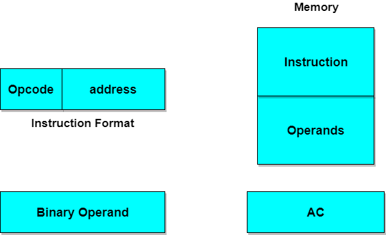

Computer Architecture: Instruction Codes
While a Program, as we all know, is, A set of instructions that specify the operations, operands, and the sequence by which processing has to occur. An instruction code is a group of bits that tells the computer to perform a specific operation part.
Instruction Code: Operation Code:
The operation code of an instruction is a group of bits that define operations such as add, subtract, multiply, shift and compliment. The number of bits required for the operation code depends upon the total number of operations available on the computer. The operation code must consist of at least n bits for a given 2^n operations. The operation part of an instruction code specifies the operation to be performed.
Instruction Code: Register Part:
The operation must be performed on the data stored in registers. An instruction code therefore specifies not only operations to be performed but also the registers where the operands(data) will be found as well as the registers where the result has to be stored.
Stored Program Organisation:
The simplest way to organize a computer is to have Processor Register and instruction code with two parts. The first part specifies the operation to be performed and second specifies an address. The memory address tells where the operand in memory will be found.
Instructions are stored in one section of memory and data in another.
Computers with a single processor register is known as Accumulator (AC). The operation is performed with the memory operand and the content of AC.
Common Bus System:
The basic computer has 8 registers, a memory unit and a control unit. Paths must be provided to transfer data from one register to another. An efficient method for transferring data in a system is to use a Common Bus System. The output of registers and memory are connected to the common bus.
Load(LD):
The lines from the common bus are connected to the inputs of each register and data inputs of memory. The particular register whose LD input is enabled receives the data from the bus during the next clock pulse transition.
Before studying about instruction formats lets first study about the operand address parts.
When the 2nd part of an instruction code specifies the operand, the instruction is said to have immediate operand. And when the 2nd part of the instruction code specifies the address of an operand, the instruction is said to have a direct address. And in indirect address, the 2nd part of instruction code, specifies the address of a memory word in which the address of the operand is found.
Computer Instructions:
The basic computer has three instruction code formats. The Operation code (opcode) part of the instruction contains 3 bits and remaining 13 bits depends upon the operation code encountered.
There are three types of formats:
1. Memory Reference Instruction
It uses 12 bits to specify the address and 1 bit to specify the addressing mode (I). I is equal to 0 for direct address and 1 for indirect address.
2. Register Reference Instruction
These instructions are recognized by the opcode 111 with a 0 in the left most bit of instruction. The other 12 bits specify the operation to be executed.
3. Input-Output Instruction
These instructions are recognized by the operation code 111 with a 1 in the left most bit of instruction. The remaining 12 bits are used to specify the input-output operation.
Format of Instruction:
The format of an instruction is depicted in a rectangular box symbolizing the bits of an instruction. Basic fields of an instruction format are given below:
- An operation code field that specifies the operation to be performed.
- An address field that designates the memory address or register.
- A mode field that specifies the way the operand of effective address is determined.
Computers may have instructions of different lengths containing varying number of addresses. The number of address field in the instruction format depends upon the internal organization of its registers.